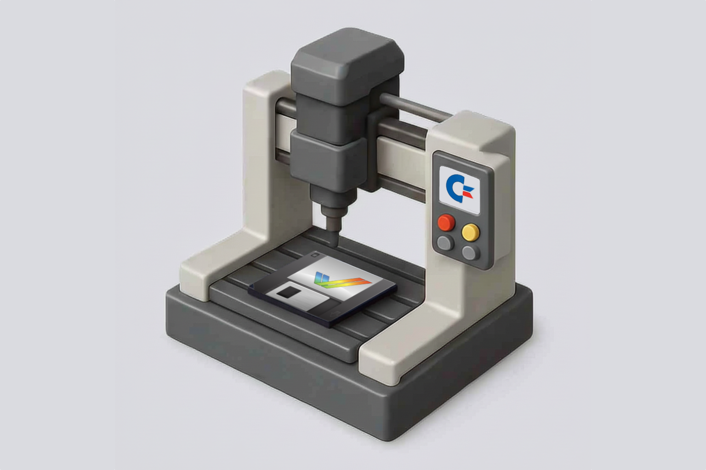

ADF.inder
There are many ADF tools out there but they almost feel to me that the author got a phone call for an important meeting and decided to not go back to finish what they started. I wanted an Opus File Manager for macOS users to handle Amiga disks. So I built it and when I got the call, I told to my non existing secretary "no calls today, I am coding".
ADF.inder allows you to operate on Amiga Disk images like
there's no tomorrow. You can add/remove files, edit content, create
images, I mean I haven't found a limitation yet. Click the learn
more button to see the current list of features.